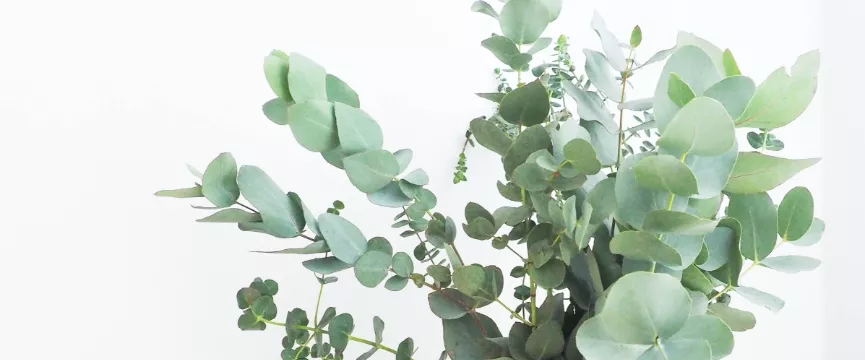

BY CORY VAUGHN MAY 22, 2020
Over the years I’ve tucked carrots into a famous chef’s bridal bouquet, included chili peppers and tiny eggplant in food-loving grooms’ boutonnieres, sprinkled clusters of cherry tomatoes through hundreds of centerpieces, added raspberries to guestbook displays, and woven scented herbs into as many floral designs as I could manage.
“ THERE’S NOTHING QUITE LIKE PAIRING FOOD WITH FLOWERS. MOST PEOPLE DON’T PAY MUCH ATTENTION TO WHAT’S IN A VASE UNLESS THEY RECOGNIZE THE INGREDIENTS ”
As you’re planning your garden this year, I highly encourage you to add some edibles alongside your cut flowers. Not only are they beautiful for arrangements, they are wonderful for eating. We chose the varieties in Floret’s collection of edibles—including edible flowers—because they are beautiful and delicious.
All these varieties are easy to grow from seed. Many love the heat and produce abundantly from summer through the first fall frost. Because our farm is situated in an area with relatively cool summers, I grow most of my edibles in a hoophouse for an added level of heat. But if your garden gets plenty of sun, you can grow all your edibles outdoors.
Here are some of my favorite edibles for floral design.
Peas are a cool weather crop. Direct seed in early spring as soon as the soil can be worked. Provide a strong trellis or support for vines to climb.
For use in floral design, harvest stems when pods are brightly colored, taking care when handling delicate vines. Expect a vase life of 5 to 7 days. (Please note that unlike these edible garden peas, the seeds of sweet peas are poisonous if ingested; it’s important to make this distinction in the garden.)
Peas are a cool weather crop. Direct seed in early spring as soon as the soil can be worked. Provide a strong trellis or support for vines to climb.
For use in floral design, harvest stems when pods are brightly colored, taking care when handling delicate vines. Expect a vase life of 5 to 7 days. (Please note that unlike these edible garden peas, the seeds of sweet peas are poisonous if ingested; it’s important to make this distinction in the garden.)
This cutting garden classic is easy to grow, pollinator-friendly, and a great choice for beginners. Plants will flower over a long period of time if regularly harvested. Add the bright, colorful petals to salads or egg dishes as a delightful garnish.
Combines shades of ethereal sapphire, pale blue, and cool-hued bicolors to resemble the midnight sky, and ‘Classic Romantic’, the sweetest mix of blush, pink, white, and bicolors for romantic bouquets and wedding work.
Do you enjoy growing vegetables and edible flowers you can use in arrangements? Are there other varieties you’d like to try? I’d love to hear about your plans in your comments below.
Please note: If you submit a comment and it doesn’t show up right away, sit tight; we have a spam filter that requires we approve most comments before they are published.
Lastly, if you find this information helpful, I would love it if you would share it with your friends.
Congratulations Erin and Chris and your entire team!
An achievement well-earned and much deserved! Thank you for advocating for local flowers and local flower farms in the US and worldwide.
Congratulations Erin and Chris and your entire team!
An achievement well-earned and much deserved! Thank you for advocating for local flowers and local flower farms in the US and worldwide.
Congratulations Erin and Chris and your entire team!
An achievement well-earned and much deserved! Thank you for advocating for local flowers and local flower farms in the US and worldwide.
For security, use of Google’s reCAPTCHA service is required which is subject to the Google Privacy Policy and Terms of Use.
Trend news
28
How’s to
153
Tips & Ideas
86
DIY & craft
182
Farm tours
06
Flowers have a language all their own. In Victorian times, receiving a…
MAY 22, 2020
Flowers have a language all their own. In Victorian times, receiving a…
MAY 22, 2020
Flowers have a language all their own. In Victorian times, receiving a…
MAY 22, 2020
Flowers have a language all their own. In Victorian times, receiving a…
MAY 22, 2020
The floristry business has a significant market in the corporate and social event world,
as flowers